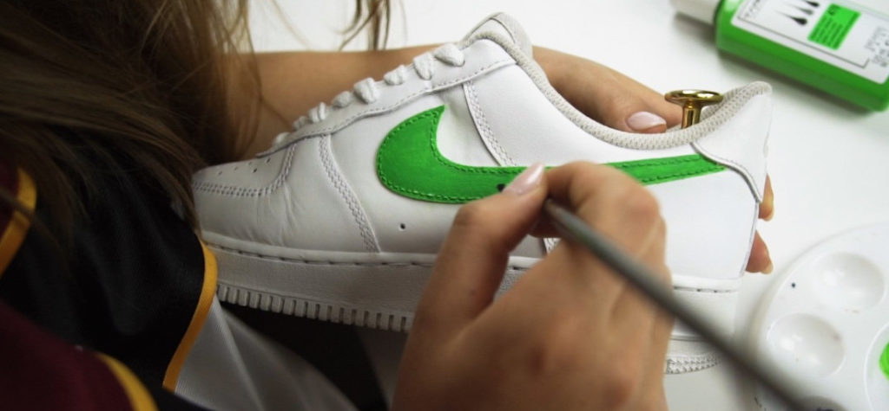

Mam na imię Ewelina, urodziłam się w 1993 roku w Krakowie, gdzie później przyszło mi przeżyć 25 lat życia (do czasu przeprowadzki do Wrocławia), studiując na Uniwersytecie Jagiellońskim najpierw to Europeistykę, a później Zarządzanie Kulturą i Mediami. Żaden z tych wyborów nie był przypadkowy, co jednak nie oznacza, że oba były w pełni trafione. Jako swój pierwszy kierunek postawiłam na Europeistykę z racji głębokiej fascynacji ideą jednoczenia narodów, wymiany kulturowej, wspólnej pracy na lepsze jutro całego kontynentu. Szybko jednak okazało się, że przedmioty polityczne mnie nużą, a jedynie te związane z szeroko pojętą kulturą pobudzają kreatywność i chęć do działania. Po 3 latach, zdobywając tytuł licencjata zrozumiałam, że na tym etapie moja przygoda ze studiowaniem nauk o Europie dobiegła końca – jako studia magisterskie wybrałam kierunek, który miał rozwinąć we mnie pasję do szeroko pojętej kultury. Tym razem wybór, na szczęście, okazał się w pełni satysfakcjonujący. W trakcie całej mojej edukacyjnej ścieżki najwięcej przyjemności i satysfakcji dawało mi pisanie. Jednocześnie, odkąd tylko pamiętam, tłem wszystkich podejmowanych przeze mnie działań była pasja do mody – od czytania biografii najsłynniejszych projektantów, przez przerabianie ubrań, po ich sprzedawanie w sieci. Szczęśliwym zbiegiem wydarzeń (któremu z całych sił starałam się pomóc), niedługo po studiach zaczęłam… pisać o modzie. Pasja przerodziła się w sposób na życie zawodowe i trwa po dziś dzień. Nie chcę rozpisywać się na temat firm z którymi do tej pory udało mi się nawiązać copywriterską współpracę, bowiem te informacje znajdują się w zakładce doświadczenie. Są jednak informacje, których nie da się wyczytać ze sztywnych ram CV. Chociażby tego, że każda współpraca jaką nawiązałam była efektem mojej inicjatywy – nie aplikowałam na ogłoszenia, po prostu oddzywałam się do firm, dla których chciałabym pisać, mówiąc, co mogę od siebie zaoferować. Tego, że mimo iż chciałabym kiedyś przeczytać swój artykuł na łamach polskiej edycji Vogue, to zdaję sobie sprawę, że droga do tego celu może okazać się bardziej wartościowa niż on sam. Albo chociażby tego, że poza czasem pracy oddaję się oglądaniu filmów (należę do tych osób, które nie mają problemu z solowym chodzeniem do kina co kilka dni), malowaniu czy – jeżeli czas na to pozwala – podróżom. Całej reszty o mojej osobie można dowiedzieć się poprzez lekturę moich tekstów, do której gorąco zachęcam.
2015
SEO COPYWRITER – DEEZEE (staż)
- tworzenie postów na profile w social mediach
- pisanie artykułów na bloga
- przygotowywanie grafik w programie Canva
2016
SEO COPYWRITER – FREELANCE
- realizacja zamówień na merytoryczne teksty branżowe dla różnych firm
- pisanie skryptów do scenariuszy reklam radiowych
- tworzenie opisów marek, kategorii, produktów i landing pages
- publikowanie treści w oparciu o WordPress
- organizowanie pracy na zasadze tasków w programie Asana
2018
SPECJALISTA DS. PROMOCJI I MARKETINGU – OPERA WROCŁAWSKA
- współpraca z resztą działu przy tworzeniu strategii marketingowej
- tworzenie i bieżąca obsługa newslettera
- organizacja eventów towarzyszących działalności instytucji kultury
- realizacja programu zamówień publicznych na materiały reklamowe
- współpraca z grafikiem oraz resztą działu przy projektowaniu materiałów reklamowych
- redagowanie treści na stronę oraz profil FB
2019
SEO CONTENT EDITOR – EOBUWIE i MODIVO
- pisanie artykułów o tematyce modowej na bloga eobuwie.pl oraz Modivo
- tworzenie opisów kategorii i marek
- tworzenie tekstów na landing pages
- pisanie artykułów offsite’owych na zewnętrzne serwisy modowe
- korektorowanie tekstów pozostałych redaktorek
- research słów kluczowych przy użyciu Ahrefs, Senuto i Answear The Public
- publikacja autorskich tekstów w oparciu o WordPress
- monitorowanie trendów i proponowanie tematów na spotkaniach redakcyjnych
2020
REDAKTOR BLOGA MODOWEGO – PYSKATY ZAMSZ
- pisanie oraz korekta artykułów o tematyce modowej na bloga marki Pyskaty Zamsz
- cotygodniowy research trendów i propozycje tematów
- dobieranie kontekstowych fotografii
SEO COPYWRITER – DOMODI
- tworzenie artykułów inspiracyjnych i sprzedażowych w oparciu o wytyczne Działu SEO
Jak sprzedawać w internecie buty, których już nie nosisz?
Customizowanie sneakersów, czyli jak malować buty metodą DIY
10 najsłynniejszych projektantów butów na świecie – wybór redakcji
Kiedy buty stają się dziełem sztuki, czyli historia Alexandra McQueen’a
Christian Louboutin – historia czerwonymi podeszwami pisana
New York Fashion Week SS 2020 – buty, które zawładnęły street stylem
Paris Fashion Week SS 2020 – jakie buty według paryżanek będą modne w sezonie wiosna-lato?
Milan Fashion Week SS 2020 – najmodniejsze buty z ulic włoskiej stolicy mody
London Fashion Week SS 2020 – zobacz jakie buty królowały w ulicznych stylizacjach
Trendy na sezon wiosna-lato 2020, promowane przez topowe marki
Modne jeansy męskie 2020 - jakie fasony są teraz na topie?
Buty New Balance w damskich stylizacjach. Sprawdź hity z Instagrama! TOP 5
Najlepsze filmy o modzie - ranking TOP10 [Aktualizacja: marzec 2020]
Jak pandemia koronawirusa wpływa na branżę mody?
10 najciekawszych trendów z 10 wybiegów na sezon jesień-zima 2020/21
Fashion news: Małgorzata Szumowska stworzyła film dla marki Miu Miu!
Parisian chic – styl, który króluje na Instagramie i 10 ubrań, które go tworzą
Jak przygotować ubrania do sprzedaży na rynku wtórnym?
Najmodniejsze kolory na sezon jesień-zima 2019/20 – street lookowe trendy
Przegląd trendów z wybiegów na sezon jesień-zima 2019/20
Zapraszam do kontaktu - chętnie odpowiem na Twoje pytania.
+48 531 127 351
ewelinagajoch@gmail.com